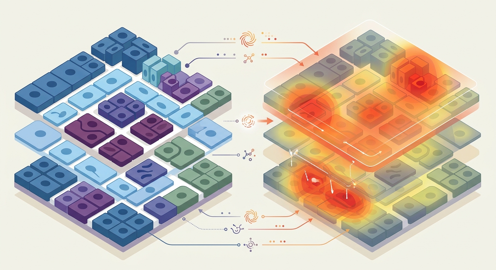

The Metabolic Metropolis: How a New Optical Technology Maps the Cellular Identity and Energy of Aging Tissues

Imagine trying to understand the inner workings of a bustling metropolis like Tokyo or New York. If you only have a residential directory, you know exactly who lives in each building, but you have no idea who is running a high-energy tech startup, who is baking bread at dawn, or whose power grid is failing. Conversely, if you only have a satellite thermal map, you can see hot spots of energy consumption, but you cannot tell if that heat is coming from a hospital, a data center, or an abandoned warehouse.
For decades, spatial biology has faced a similar blind spot. Scientists could either map the "directory" of a tissue—using advanced proteomics to identify exactly which cell types live where—or they could look at the "energy grid" of cellular metabolism. But doing both simultaneously, at the scale of single organelles inside a living tissue, was an elusive dream. Until now.
Writing in Nature Methods, a team of pioneering researchers has unveiled REDCAT (Raman Enhanced Delineation of Cell Atlases in Tissues). This all-optical platform acts as a high-definition, dual-lens camera for biology. For the first time, it allows scientists to read both a cell’s molecular identity badge and its real-time chemical furnace simultaneously, providing an unprecedented look at how cellular metabolism shifts during disease and aging.
The Symphony of Molecular Vibrations
To understand why REDCAT is a game-changer, we have to look at the limitations of current technology. Typically, mapping metabolism requires destructive techniques or heavy chemical labeling that can disrupt the very cellular processes scientists want to observe. REDCAT bypasses this entirely by harnessing the physics of light through a phenomenon known as Raman scattering.
Every molecule inside a cell—whether it is a lipid, a protein, or a metabolic byproduct—vibrates at a signature frequency. When laser light hits these molecules, it scatters, shifting in color based on those microscopic vibrations. It is the molecular equivalent of hearing a distinct chord played by a piano. By capturing this scattered light, REDCAT generates a detailed biochemical fingerprint of the cell's metabolic state, measuring lipid storage, protein synthesis, nuclear activity, and redox (energy) states without requiring a single artificial dye.
But the real magic of REDCAT is its integration of this label-free Raman imaging with high-plex immunofluorescence. After mapping the metabolic vibrations, the platform uses a sequence of fluorescently tagged antibodies to identify the precise cell types in the exact same tissue sample. By overlaying these two layers of data, REDCAT creates a fully integrated map: the cellular identity and its metabolic activity, beautifully aligned down to the subcellular level.
Deciphering the Liver, the Lymph Nodes, and the Tumors
To prove the power of their new platform, the researchers put REDCAT to work on some of biology’s most complex architectures.
In the liver, cells are organized in strict zones relative to blood flow, a phenomenon known as zonation. REDCAT seamlessly mapped these metabolic gradients, revealing how hepatocytes change their lipid and protein profiles depending on their precise physical address.
When applied to the lymph nodes—the command centers of our immune system—REDCAT exposed the highly specialized metabolic states of different immune cells, showing exactly how T-cells and B-cells customize their energy use to prepare for battle.
Perhaps most excitingly, the team used REDCAT to study lymphoma. In the chaotic microenvironment of a tumor, they caught cancer cells in "transitional states"—metabolic chameleons shifting their energy consumption to fuel rapid growth and evade the immune system. Identifying these metabolic transition states is a holy grail for oncologists looking to starve tumors before they become resistant to therapy.
The Longevity Frontier: Combatting Metabolic Drift
For biotech investors and longevity scientists, REDCAT is much more than a cool imaging tool; it is a map to undiscovered therapeutic country.
One of the primary hallmarks of aging is metabolic drift—the gradual loss of metabolic compartmentalization and efficiency across our tissues. As we age, the strict zonation of the liver breaks down, immune cells in our lymph nodes become metabolically exhausted, and senescent "zombie" cells begin to alter the metabolic health of neighboring tissues.
Until now, drug developers could not easily see how an anti-aging therapy affected the metabolism of specific cells within their natural tissue neighborhoods. REDCAT changes the equation. By allowing researchers to watch how specific cell types change their metabolic activity in response to longevity therapeutics, this platform will dramatically accelerate spatial-biology-driven drug discovery.
We are entering an era where we no longer have to choose between knowing who a cell is and knowing what it is doing. With REDCAT, we can finally watch the entire metabolic metropolis of the human body live, adapt, age, and—hopefully—heal.
Sources & Citations:
Primary Source: All-optical multimodal mapping of single-cell-type-specific metabolic activities via REDCAT. (Nature methods)
- Ge, J., et al. (2026). All-optical multimodal mapping of single-cell-type-specific metabolic activities via REDCAT. Nature Methods. https://doi.org/10.1038/s41592-026-03180-0